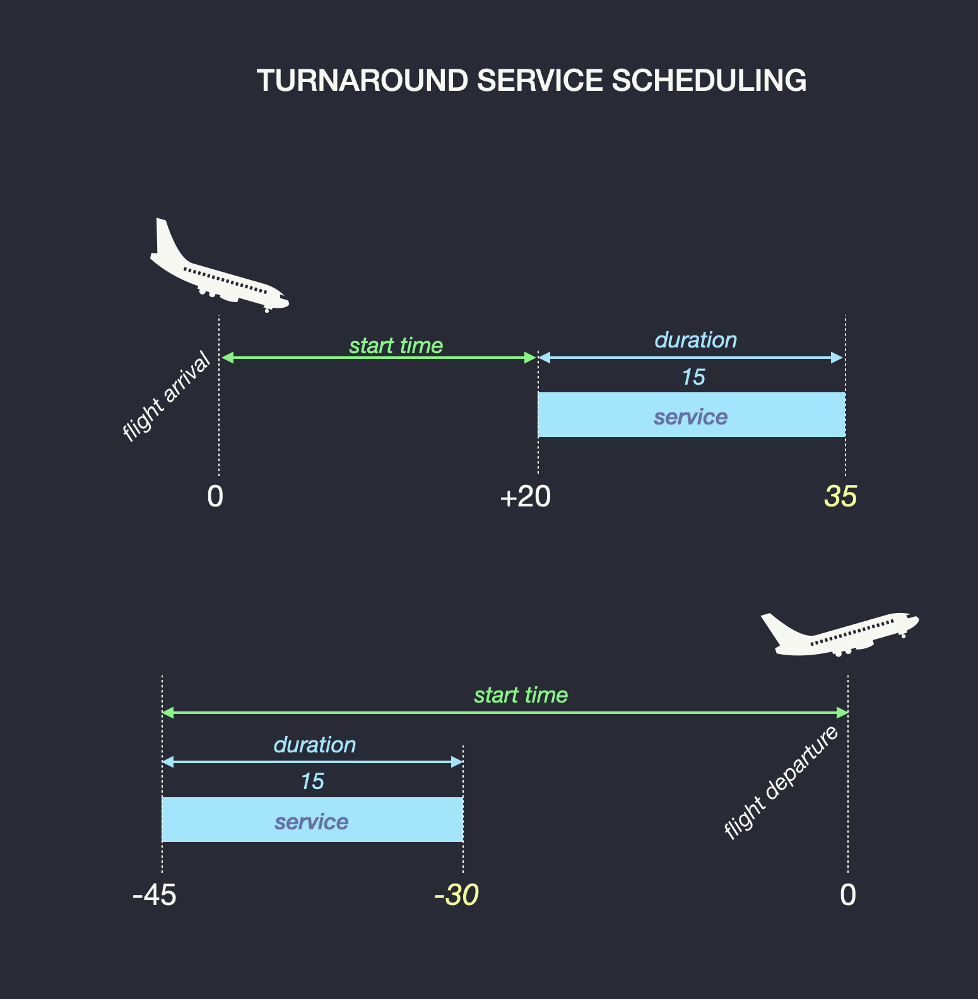

The turnaround profile is a list of individual services that make up the turnaround process. The profile first starts with a few selective attributes, and is followed by one or more services.

Example for arrival¶
movement: arrival
body: narrow
ramp-type: jetway
payload: pax
name: standard
services:
- service: cleaning
vehicle: cleaning-truck
start: 20
duration: 15
Example for departure:¶
movement: departure
body: narrow
ramp-type: jetway
payload: pax
services:
- service: fuel
vehicle: fuel-tanker-small
start: -45
duration: 15
precise-positon: fuel-rightwing
Profile Attributes¶
Aircraft type¶
ICAO Aircraft type designator.
The aircraft type is used to determine if the aircraft is a narrow or wide body type of aircraft.
Movement¶
Determine if the profile applies to arrival or departure.
Ramp Type¶
Determine if the profile applies to ramp with a jetway, or parking tiedown.
Payload¶
Determine if the aircraft is a passenger (pax) or a cargo flight.
Name¶
Optional profile name. It is possible to select a profile by its name. Name must be unique, otherwise the profile is ignored.
Services¶
The list of services for that profile.
Service¶
services:
-
service: fuel
start: -45
duration: 15
precise-position: fuel-rightwing
Each service correspond to the move of a ground support equipment that first travels from a parking to the ramp, then delivers the service to the aircraft, and finally leaves the ramp to a final destination.
Each service is scheduled to occur at a time relative to the movement of the flight.
For arrival services, scheduling of services is relative to the arrival time of the flight which correspond to the on-block time. For departure services, scheduling is relative the departure time of the flight, which correspond to the off-block time.
Service Attributes¶
Service¶
Type of the service.
Example of service types are: sewage, catering, refuelling, baggage offloading or loading, cargo handling, water, APU, cones…
Vehicle¶
Name of the model of service vehicle used to deliver the service. Must correspond to the model of a Ground Support Equipment above. If the vehicle specified here cannot be found, another vehicle capable of delivering the same service will be randomly selected.
Start¶
Time in minutes, relative to the block time, when the service should occur.
For example: refuelling, start: -40: Refueling will start 40 minutes before the off-bloxk departure time.
Duration¶
Duration time of the service in minutes. For example: refueling, duration: 25. Refueling will last 25 minutes after arrival of the service vehicle next to the aircraft. After 25 minutes, the service vehicle will leave to ramp area to its destination.
Precise Position¶
A precise position is the position where the service vehicle should go.
When scheduling several services of the same type, it is possible to precise which position to select to avoid these vehicle to collide at the same position. For example, when scheduling two fuel services, it is possible to send each fuel truck under each wing.
The name of the precise service position must match a position in the aircraft GSE position profile.
If no precise service position is specified, LATA will select a position for the service. If no position is found, the center of the ramp is selected.
No Movement¶
If a service contains a no-movement attribute, LATA will place the vehicle for the corresponding service at the service time but will not animate the vehicle. It will remove the vehicle at the end of the service.
In this case, vehicle should be thought as an « object ». For example, it is possible to place cones or chocks around the aircraft and have them disappear at the end of the turnaround. Cones or chocks will appear and disappear but will not be animated.
Name¶
Optional service name. The name is used in comments. If no name is used, LATA will assign a unique name based on service type and sequence number.